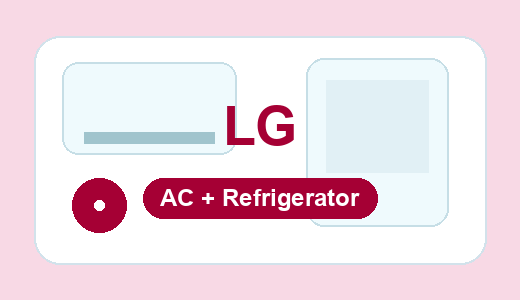
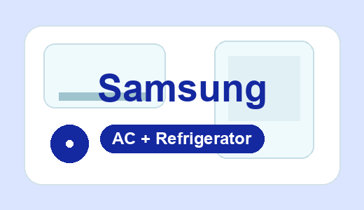
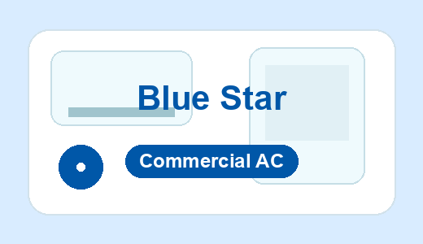
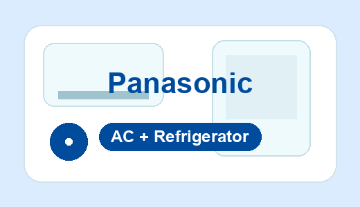
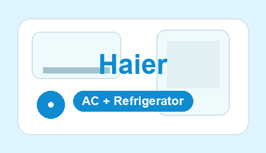
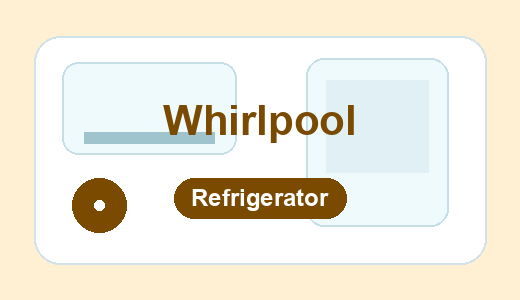
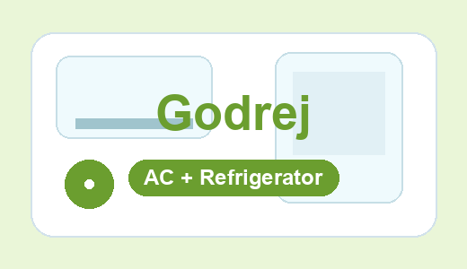
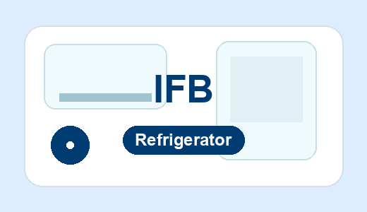

Coldway Comforts covers homes, offices, shops, clinics, restaurants, showrooms and commercial spaces across South Mumbai, Central Mumbai and nearby Navi Mumbai service routes. Use the area finder below to reach the right AC service near me page for AC repair, commercial AC maintenance, cassette AC, tower AC, central AC and refrigerator support.
Find the nearest Coldway Comforts area page for AC service, AC repair, commercial AC work and refrigerator service in Mumbai and Navi Mumbai.
Coldway Comforts supports major AC and refrigerator brands used in Mumbai and Navi Mumbai homes, offices, shops, clinics, restaurants and commercial spaces. We are an independent doorstep service provider for diagnosis, servicing, repair guidance, installation support and maintenance.

LG AC & Refrigerator service support
Samsung AC & Refrigerator service support
Blue Star AC service support
Panasonic AC & Refrigerator service support
Haier AC & Refrigerator service support
Whirlpool Refrigerator service support
Godrej AC & Refrigerator service support
IFB Refrigerator service supportEvery area link leads to a dedicated AC service near me page with its own title, description, service schema, phone number and related service links. Search your area, then open the matching page for AC repair, commercial AC service, refrigerator service and other cooling support.
These links now come directly from the live area pages in the website folder, so no generated area is left out.
When a customer calls from any listed area, the team first confirms the AC type, cooling issue, location and urgency. For commercial calls, we ask about the space size, unit type and access requirements so the technician arrives prepared.
Large spaces, offices, restaurants, showrooms, clinics and business locations are handled with priority because cooling downtime affects customers and staff.
Share your area name, AC type and problem. We will guide you on inspection, service timing and next steps before work begins.
Search your area, choose the closest service page and call or WhatsApp both phone numbers. Share your location, AC brand, AC type, issue and indoor/outdoor unit access so the visit can be planned properly.
Use the area search box, open your area page, then call or WhatsApp your exact location, AC type, brand and issue for doorstep support.
We handle split AC, window AC, inverter AC, cassette AC, tower AC, ductable AC, central AC and large commercial AC systems.
Popular brands include LG, Samsung, Daikin, Voltas, Blue Star, Carrier, Hitachi, Panasonic, Haier, Whirlpool, Godrej, Lloyd, Mitsubishi, Bosch and IFB.
Yes. We support refrigerator cooling issues, compressor checks, thermostat concerns and general doorstep refrigerator service guidance.
Same-day inspection is available in many Mumbai and Navi Mumbai areas depending on technician route and booking time.
Yes. The technician checks the issue and explains the repair, part replacement, gas refill or maintenance advice before major work starts.
Yes. Commercial AC maintenance is core work, including cassette AC, tower AC, central AC and large space cooling systems.
Yes. We support gas pressure checks, leak checking, vacuuming and gas filling after diagnosis.
Choose any number to start chat with Coldway Comforts.
WhatsApp +91 98192 13075WhatsApp +91 96534 65441